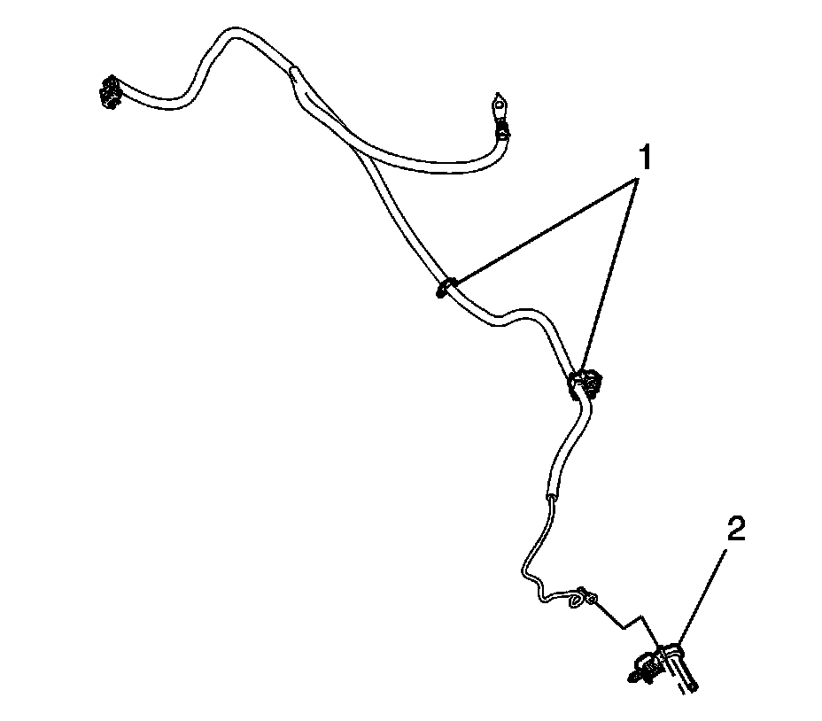

Battery Current Sensor: Service and Repair
BATTERY CURRENT SENSOR REPLACEMENT
REMOVAL PROCEDURE

1. Remove the negative battery cable.
2. Mark the location of the battery current sensor on the battery cable with tape for reference during installation.
3. Remove the tape securing the battery current sensor to the negative battery cable.
4. Mark the location of the negative battery cable clips (1) and remove the clips from the cable.
5. Squeeze the negative battery cable branches together.
6. IMPORTANT: Note the orientation of the battery current sensor prior to removal.
Slide the battery current sensor (2) off of the negative battery cable.
INSTALLATION PROCEDURE
1. Squeeze the negative battery cable branches together.
2. IMPORTANT: Ensure the battery current sensor is installed in the correct direction and location on the negative battery cable.
Slide the NEW battery current sensor (2) up onto the negative battery cable to the location previously marked during removal.
3. Wrap electrical tape around the battery current sensor leg in order to secure the sensor to the negative battery cable.
4. Install the negative battery cable clips (1) to the cable to the locations previously marked during removal.
5. Install the negative battery cable.